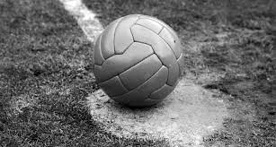

O futebol moderno surgiu na Inglaterra durante o século XIX, mas relatos históricos apontam que já existiam práticas esportivas parecidas. Atualmente, grandes competições de futebol são organizadas todos os anos por diferentes entidades futebolísticas (nacionais, continentais ou internacionais).
O futebol é o esporte coletivo mais popular do planeta. Segundo dados da Federação Internacional de Futebol (Fifa), cerca de 270 milhões de pessoas atuam em atividades diretamente relacionadas ao esporte (seja como jogador, seja como árbitro)
O vestígio de prática similar ao futebol mais antigo do qual se tem conhecimento remonta à China de 3000 a.C. Mas os registros históricos não remetem apenas aos chineses. Existem evidências de esportes semelhantes ao futebol sendo praticado por japoneses, egípcios, além de gregos e romanos antigos. Também há registros em diferentes povos mesoamericanos (da região da Mesoamérica, atual México e América Central). Eduardo Galeano traz relatos de algo parecido com o futebol sendo praticado na Inglaterra durante a Idade Média. O jornalista uruguaio destaca que, no século XIV, o rei Eduardo II condenava essa prática esportiva. Outros reis ingleses como Eduardo III, Henrique IV e Henrique VI chegaram a proibir a prática do esporte.

Apesar dos registros históricos mostrarem que antes de Charles Miller já havia acontecido jogos de futebol no Brasil, foi ele quem organizou a prática do esporte e a formação dos clubes de futebol, sendo assim considerado o “Pai do futebol” no Brasil
Atualmente, grandes competições de futebol são organizadas todos os anos por diferentes entidades futebolísticas (nacionais, continentais ou internacionais). E o esporte popularizado entre as massas de trabalhadores pobres é um segmento bilionário que movimenta muito dinheiro e move interesses políticos mundo afora.
